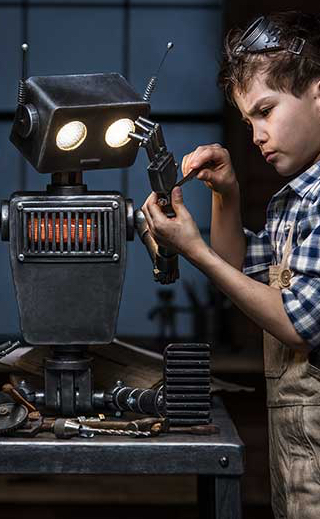

- 


Skeynet
To be effective as both specialists and generalists — as well as being both practical and investigative — roboticists need a good set of supporting skills. In this list we've taken 25 career skills and grouped them into 10 essential skills for roboticists.